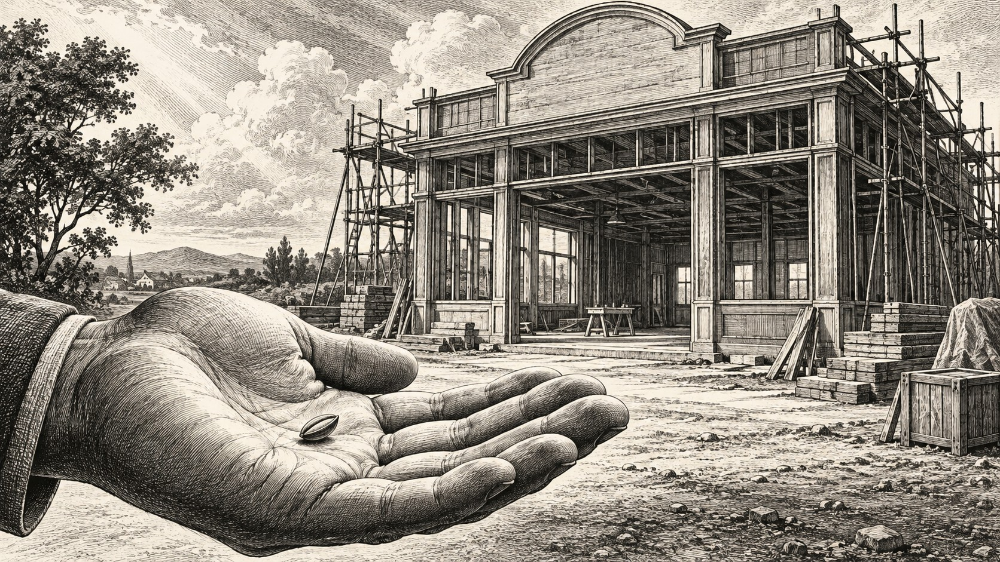

0→1できてない人ほど、完成してから売ろうとする

「商品がまだ完成してないので、販売はもう少し先です」
これ、起業初期の方から結構聞きます。講座を全部撮って、
資料もきれいにして、LPを作って、
公式LINEを整えて、
決済ページも準備して、よし。
ようやく販売できる。
……いや、長い長い（笑）
もちろん、適当なものを売れという話ではありません。ただ、
「売れる状態にしてから売る」と、
「完璧な状態にしてから売る」は、全然違います。
むしろ0→1の段階では、
完成させてから売ろうとするほど、
遠回りになることもあります。なぜなら、
売る前に考えていることの大半は、まだ仮説だからです。
✦
お客様がいない状態で作る商品は、だいたい妄想です
ちょっと言い方悪いですけど（笑）
商品を作っている時って、
「こういうことで悩んでるはず」
「これがあったら喜ぶはず」
「この内容なら10万円くらいの価値があるはず」と考えます。でも、その“はず”って、
まだ誰にもお金を払ってもらっていない段階では、
全部こちら側の仮説なんですよね。
僕も商品設計では、誰に、何を、どんな順番で、どう届けるのか、
めちゃくちゃ考えます。
ただ、それでも最後の答えは市場にしかありません。
どんな言葉に反応するのか。
何に一番困っているのか。どこでつまずくのか。
どんなサポートが必要なのか。
そして何より、本当にその商品にお金を払ってくれるのか。ここだけは、
机の上で100時間考えても分かりません。なので僕は、
0→1って、「商品を作った」でもなければ、「発信を始めた」
でもなく、
自分がこれから売っていきたい商品に対して、実際にお金を払ってくれる人が現れた瞬間
だと思っています。500円でも、5万円でも、50万円でも、
価格の問題ではないです。
自分が売りたいと思ったものを、
誰かが「欲しい」と言って買ってくれた。ここで初めて、
仮説が一個、現実になります。
✦
0→1前なのに、いきなり完成品を作ろうとする
起業初期って、なぜか最初の商品から、
「ちゃんとした商品を作らなきゃ」となりがちです。
全10章。動画30本。ワークシート付き。専用サイトあり。
特典7個。豪華PDF。みたいな。
まだ一人も買ってないのに、
急にNetflixくらいコンテンツを用意し始める（笑）
でも、本当に怖いのは、
作ることじゃないんです。
全部作ったあとに、誰も欲しがらなかった時です。3か月かけて作った。
動画も全部撮った。LPも作った。LINEも組んだ。そして募集。
……シーン。これ、精神的にもキツいです。しかも、
「商品が悪かったのか」
「訴求が悪かったのか」
「価格が悪かったのか」
「ターゲットが違ったのか」
何が原因なのかも分からない。
完成度を上げれば上げるほど、
方向転換もしづらくなります。
人間って、自分が時間やお金をかけたものほど捨てづらくなるので。
いわゆるサンクコストですね。
「ここまで作ったんだから……」が発動して、
売れない商品をさらに磨き始めることもあります。
いや、そこじゃない（笑）
磨く前に、そもそも欲しい人がいるのか確かめた方がいい。
✦
だから最初は「小さく売る」
ここで出てくるのが、シードローンチという考え方です。Seed＝種。
つまり、最初から大勢に向けてドーンと販売するのではなく、
少人数の見込み客に対して、
まず小さく商品を販売してみる。そして実際のお客様と関わりながら、
商品を改善していく。
ざっくり言えばそんな販売方法です。個人的には、
これ、0→1とめちゃくちゃ相性がいいと思っています。
なぜなら、0→1の段階で必要なのは、
フォロワー1万人でも、
100万円の売上でもなく、
「この商品を欲しい人が本当にいる」という証拠だからです。一人売れた。
二人売れた。
実際に提供した。こんな質問が来た。ここでつまずいた。
ここを喜んでもらえた。
この言葉が刺さった。こういう情報が、
次の商品設計に使える。つまり、最初のお客様って、
売上を作ってくれるだけではないんです。
商品を一緒に完成させてくれる人でもある。
僕はこっちの価値の方が、
0→1では大きいと思っています。
✦
「完成してないのに売っていいんですか？」
これを言うと、たぶん出てくる疑問がこれ。もちろん、
「何もありません。でも10万円ください」
は違います（笑）最低限、誰に、何を提供して、
どういう状態を目指すのか。
ここは決まっている必要があります。
ただ、動画を全部収録している必要はない。
教材が100％揃っている必要もない。例えば、
6週間の講座なら、
1週目の内容と全体設計を用意して募集し、
受講者の反応を見ながら、
2週目、3週目をブラッシュアップしていく。
こういう作り方もできます。
むしろその方が、「自分が教えたいこと」ではなく、
「お客様が本当に必要としていること」
が商品に入ってきます。
最初から全部決めてしまうと、こちらが勝手に「ここ大事でしょ！」
と思って1時間話していた内容が、お客様からすると、
「あ、そこは別に困ってないです」
だったりしますからね（笑）
逆に、10分で終わらせる予定だったところで、
質問がめちゃくちゃ出ることもある。
そこに需要があります。
✦
ここまでは、“なぜ0→1が難しいのか”という話でした。
ここからは、実際に0→1を作る方法として「シードローンチ」という考え方に入っていきます。
ここから先は、エルラボ＋メンバー限定です。
続きは、アプリ内のシークレットコラム
「シードローンチという小さな売り方」でお読みいただけます。
続きだけ読みたい方は、noteでも単品でお読みいただけます（¥300）。
noteで読む →
※たくさん読むなら、エルラボ＋のほうが安いです。
とーる｜猫好きの行動経済アナリスト